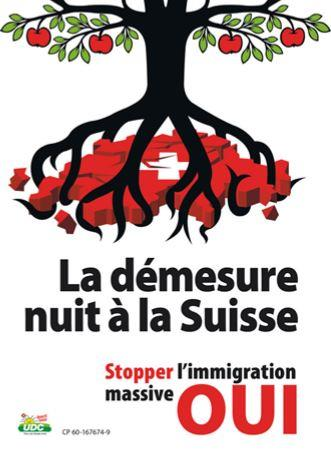

Que peut-on pronostiquer de sensé sur une année qui commence comme celle-ci ? Rien, sans doute. Mais on peut essayer de lire les signaux laissés dans le sillage de l’année précédente — ou simplement d’ausculter le langage, verbal ou non, des gouvernants. Subjectivement, j’en ai déduit sept tendances «de fond » qui risquent de marquer l’an de grâce 2020.
Chaque pas que vous faites le 1er janvier préfigure, dit-on, la suite de l’année. De même, les vœux des chefs d’État n’ont rien d’une pure formalité, même s’ils ressemblent parfois à des figures imposées. Ils donnent la température et le ton du rapport gouvernants-gouvernés.
Dans nos pays, on est frappé cette année par le peu de conviction qui ressort de ces exercices.
M. Macron, fidèle à sa rhétorique de l’oxymore et de la transgression, s’est voulu ouvert au compromis et en même temps déterminé à imposer sa réforme des retraites. Son allocution, manifestement filmée en surimpression devant les drapeaux et les jardins de l’Élysée, n’a rien de naturel.
Elle se distingue par une gestuelle contrainte et une diction crispée, le menton tendu et les yeux rivés au prompteur. La comparaison avec les vœux très chaleureux de Boris Johnson à Noël — des vœux qu’Emmanuel Macron n’a pas jugé utile d’adresser à la nation1 — est même effarante. Malgré son expérience d’acteur, il n’arrive pas à simuler la moindre proximité avec ses sujets.
En Suisse, on est loin des fastes royaux et de la rhétorique qui va avec. On est même loin du gouvernement. Obéissant sans doute à des Spin Doctors jamais à court d’idées incongrues, la présidente de la Confédération, Simonetta Sommaruga, a choisi de s’adresser au pays en achetant du pain dans une boulangerie2. Elle le fait avec la simplicité surjouée et la laborieuse bonhomie qui a déjà fait se tordre la planète avec le sketch involontaire de son prédécesseur Schneider-Ammann sur les bienfaits du rire3.
La ministre rémunérée 500 000 CHF4 par an attend sagement, comme tout le monde, qu’on lui rende sa monnaie pour se retourner vers le peuple (et soudain, hop !, la boulangère et sa caisse disparaissent du cadre!) et lui livrer une homélie sur les vertus et l’odeur du pain. Le message de cette mièvre mise en scène est assez clair : soyez reconnaissants que votre assiette soit remplie et profitez des choses simples. Les plans et les perspectives de l’exécutif qui vous représente ? Ce n’est plus de votre ressort. Digérez, braves gens, nous nous occupons de tout. Mais ne demandez pas plus que le pain quotidien !
À Berne et à Paris, les décors et le ton sont on ne peut plus opposés, mais le fond du message est le même. Le pouvoir ne se sent pas (plus ?) tenu de laisser croire au quidam qu’il participe à la conduite des affaires. Ni que « ça ira mieux ». Promettre des lendemains meilleurs est tout de même devenu indécent.
Tendance 1 : Le pouvoir réel prend pignon sur rue
M. Macron, dans toute sa vacuité, a au moins annoncé ses intentions gouvernementales — fût-ce pour promettre la confrontation. Pour compléter le tableau, et dans la foulée, il a promu le patron français du fonds d’investissement américain BlackRock au rang d’officier de la Légion d’honneur, soulevant la stupeur dans le pays.
BlackRock, entre autres choses, pourrait bénéficier de la réforme des retraites, et en connaît un bout sur l’entrisme politique : n’a-t-il pas recruté pour son antenne helvétique Philipp Hildebrand, l’ancien directeur de la Banque nationale suisse ? Voilà au moins un message clair du Nouvel An : le très petit monde de la haute finance, d’où est issu M. Macron, se promeut et se récompense entre soi sans plus se cacher. Ces coming out effrontés du pouvoir techno-financier devraient se multiplier en 2020, peut-être pas pour le meilleur profit des intéressés, à long terme. Mais comme il est difficile de rester à l’ombre quand on peut s’acheter toute la lumière !
De la même manière, dans un domaine voisin, les GAFA et alliés se profileront-ils toujours plus ouvertement, non comme des plateformes de services, mais comme les administrateurs et policiers de la political correctness globale. Et ne parlons pas des irruptions du Deep State — donc de toute la sphère du pouvoir officieux — dans la conduite des affaires américaines. Elle occupe déjà l’essentiel de l’actualité.
De tous côtés, avec un cynisme auquel nous n’étions pas habitués, on voit se manifester des pouvoirs dont on nous assurait (sous peine d’être taxés de « complotisme ») qu’ils n’existaient pas.
Tendance 2 : Vous apprendrez la résignation !
C’est là que les sucreries de la boulangère bernoise rejoignent la logique de double contrainte d’Emmanuel Macron. Les messages contradictoires de M. En-Même-Temps (concession-intransigeance, dialogue-autisme, etc.) ont le même effet que la bonne odeur du pain. Ils démobilisent. Macron : Faites ce que vous voulez, je m’en fiche de tout et je fais ce que j’ai décidé. Je peux bien penser blanc et noir à la fois si cela me chante. Sommaruga : Quoi ? Vous ne sentez pas comme c’est bon ? Vous voudriez quoi de plus ? L’air de rien, on s’est définitivement éloigné de cette communion civique (« citoyenne », dit-on depuis qu’elle est morte) qui assurait le lien entre les élus et l’électorat du temps de la démocratie. Par la corruption ou la contrainte, on vous apprend désormais la « résilience », expression rassurante et impropre, mais qui évite de prononcer le mot résignation ! L’état d’urgence, le défaut de service, la panne, le danger d’attentat deviennent peu à peu l’environnement de vie ordinaire des Européens dont la sécurité et l’aisance caractérisaient jusqu’ici le cadre de vie. A chaque nouvelle menace, la réponse des pouvoirs est identiquement fataliste. Non : « nous allons y remédier coûte que coûte », comme l’auraient martelé un Trump ou un Poutine, mais : « il vous faudra bien faire avec ». Pour vous faire avaler autant d’atteintes à vos droits et libertés, pour vous faire admettre votre état de dépossession, on n’a pas le choix : on vous enseignera la résignation.
Tendance 3 : L’obsolescence des partis politiques
La notion de démocratie n’ayant désormais pas plus de poids dans les allées du pouvoir que celle de résurrection à la Banque du Vatican, il est logique que la dialectique des visions opposées et les partis qui les incarnaient sortent du jeu. Durant toute l’année 2019, et encore dans ce numéro (voir les Turbulences5 et l’article d’Arnaud Dotézac sur les Sleeping Giants6), nous avons chroniqué l’entropie de la vie politique française en direction d’un système autoritaire à parti unique. Cette évolution politique se calque sur l’accaparement du pouvoir financier entre un nombre de mains de plus en plus restreint. De fait, en Europe de l’Ouest, les partis d’opposition réels ont disparu.
Même la Suisse, patrie de la démocratie directe où l’UDC nationaliste demeure le premier parti, applique les directives de la dépossession globaliste sans entrave notable. Au contraire : en tolérant sans broncher que son propre ministre au gouvernement signe les accords les plus néfastes pour la souveraineté du pays (comme le Mercosur), l’UDC s’est réduite au rôle de parti-alibi.
Face au règne du Parti unique global (PUG), il subsiste des poches gouvernées par des partis uniques locaux (PUL), telle que la Hongrie, le Bélarus et quelques autres. Aucune réponse démocratique au PUG n’est possible dans la mesure où le parlementarisme allié au système médiatique et à la dictature des juges est devenu le cheval de Troie du Parti unique global. Le personnel du PUG se répartit sans complexe entre la gauche modérée et la droite bourgeoise pour s’approprier le centre et légaliser par les urnes le règne sans partage de l’idéologie ultralibérale.
Seule réponse à cette cinquième colonne, les partis « populistes », dirigés souvent par des personnalités problématiques et naïves. Leur alliance de circonstance avec la Russie (faute d’autres alliances possibles !) leur ouvre le flanc à des attaques faciles (voir l’élimination de Strache en Autriche7) et rend leur avenir improbable.
On commence à peine à s’en apercevoir, mais les partis politiques, en 2020, font déjà partie du passé. De même que la liberté d’expression, en particulier en France.
Tendance 4. Le règne des machines
Parlons-nous de l’avènement des machines ou de la machinisation de l’homme ? Des deux, mon général, mais la deuxième tendance est moins commentée. Pendant que les médias de grand chemin s’extasient sur le moindre progrès de l’intelligence artificielle — elle a vaincu même le champion du monde de go8, rendez-vous compte ! — la vie et le travail humains sont de plus en plus soumis à une régulation informatique et désincarnée. C’est ce que j’ai décrit comme « Le (tout) grand remplacement9 ». Sur la feuille de route de la marchandisation de l’homme figure en haute priorité la disruption de son processus de reproduction. Demain par l’utérus artificiel, aujourd’hui par l’utérus de location, première intrusion concrète de l’ultralibéralisme dans le sanctuaire du vivant. La GPA/PMA bénéficie d’une promotion appuyée dans les médias et les institutions, accompagnée du muselage des opposants. Ainsi est-on allé en 2019 jusqu’à censurer une conférence de Sylviane Agacinski, l’une des voix les mieux articulées d’opposition au « grand marché procréatif mondial ».
À la lumière de cette évolution, on finira par comprendre que la promotion des sexualités diversitaires (LGBTQZRXetc.) était elle-même, en partie, une campagne de marketing d’un nouvel esclavage où la liberté des mœurs n’était qu’un appât 10. Au bout du programme : la mise en batterie de l’élevage humain.
C’est la « face cachée » de l’idéologie transhumaniste, aboutissement logique du technocapitalisme. À l’attention de l’élite, la promesse claironnée d’un humain augmenté par la technologie.
Pour la masse, le projet discret d’une humanité dégradée — demain par la génétique, aujourd’hui par la « fabrique du crétin11 » que devient l’école — au stade adéquat pour la fonction qu’on lui destine.
L’année 2020 verra, malgré les mises en garde scientifiques12 et les oppositions locales13, la généralisation de la 5G, support de l’« Internet of Things », qui devrait accélérer considérablement la mise sous tutelle de l’humain par la « vile poussière intelligente » des nanotechnologies (voir « Les dernières prophéties de Julian Assange »14, Antipresse 149).
Tendance 5. La normalisation de la guerre
On la sentait venir depuis longtemps, mais les premiers événements de 2020 nous plongent carrément dans le bain. Au lendemain de l’assassinat du général Soleimani, le directeur de l’influent Council on Foreign Relations américain, RIchard N. Haass, annonçait la couleur :
« Ne vous y trompez pas: une guerre avec l’Iran ne ressemblera pas aux guerres du Golfe en 1990 ou à l’Iraq en 2003. Elle sera livrée dans toute la région avec une vaste palette d’armes et contre une large palette de cibles civiles, économiques et militaires. La région (et peut-être le monde) en sera le champ de bataille15. »
Le monde comme champ de bataille ! Sans diaboliser une partie en jeu, il est indiscutable que cette dérive a un protagoniste principal. Hier encore hégémoniques, les Etats-Unis sont un empire sur la défensive qui ne se fie plus qu’à l’usage de la force et à l’intimidation. Ils en ont fait la preuve cet automne en fomentant de nouvelles déstabilisations en Europe de l’Est (en favorisant le schisme entre Églises orthodoxes16), en décembre en entravant17 la pose du gazoduc russo-européen Nordstream 2, et ces derniers jours en s’attaquant inconsidérément au guêpier moyen-oriental. En arrière-plan de ces coups apparemment erratiques, une lutte désespérée pour la maîtrise des voies énergétiques, en particulier du gaz18.
Et ce n’est que le commencement. La guerre universelle et permanente est la dernière carte d’un empire entièrement dominé par son complexe militaro-industriel et à l’idéologie violente qu’il diffuse, y compris au travers de ses productions culturelles. Jusqu’où ses satellites poltrons garderont-ils le silence en regardant ailleurs ? Sans doute jusqu’à ce que la guerre frappe à leurs portes.
Or en réalité, la guerre est déjà dans la place. La France, par exemple, se trouve depuis plusieurs années en état d’urgence permanent et depuis novembre 2018 en situation de guerre civile de basse intensité. Partout dans le monde développé, les tensions de classes insurmontables, ajoutées au « conflit de civilisations » importé par la migration forcée, créent des situations propices à des développements semblables, potentiellement attisés de l’extérieur. La menace de troubles civils, jusqu’ici tacite, est désormais explicitement utilisée19 comme levier politique par les USA.
Tendance 6. Information, le retour au réel
La mise à nu des rapports de force sur la scène internationale et intérieure a un avantage : le dégrisement de l’opinion publique. La perlimpinpin médiatique ne passe plus — du coup l’on recourt à la répression directe, à peine voilée par des organisations prétextes (« Sleeping Giants », voir leur déshabillage par Arnaud Dotézac20 dans l’Antipresse 214). En UE, en 2019, les plateformes internet russes RT/Sputnik ont fini par atteindre une influence stratégique, suscitant des réflexes de censure21 qui foulent aux pieds la liberté d’expression.
Parallèlement à ces tentatives de jugulation de l’internet, l’on assiste à un développement des « altermédias » ainsi qu’à une transformation des médias institutionnels. Quelle que soit la technologie ou la plateforme, 2020 sera une année clef pour les systèmes d’information. Tant qu’il restera un soupçon d’espace pour respirer, de nouvelles sources viendront combler les lacunes criantes des médias de grand chemin en matière d’information et de débat.
Après les « grands sujets » et la politique internationale, on voit en effet aujourd’hui que même les faits d’intérêt local — qu’il s’agisse des voitures qui brûlent à Strasbourg ou des enfants qu’on arrache à leurs familles en Suisse — font l’objet d’un filtrage sévère. L’avenir n’est pas à la « réinformation », mais à la vraie information, ancrée dans le réel, apolitique, animée par le sens commun et mue par une vision élargie des causes et des effets. La réinformation, antimatière d’une information idéologiquement calibrée, était une révérence inutilement adressée aux médias de référence. La vraie information va se découpler du « mainstream » en le laissant tricoter son monde parallèle.
Tendance 7. Prises de conscience
Depuis 2019, le terme proscrit de Deep State (État profond) a pignon sur rue. Ce concept dramatique ne recouvre rien d’autre que l’aspiration de l’aristocratie d’argent et de sang (les féodalités familiales et népotiques) à s’affranchir de toute contrainte démocratique et légale. Le Deep State, à ce titre, se manifeste partout et jusqu’en Suisse à travers le lobby des pharmas, des assurances et des banques, capable de bloquer ou d’anesthésier n’importe quelle décision du peuple souverain.
La différence est que tout est désormais sur la table. Ni les partis politiques, ni les États ni les institutions, ni les Églises ne remplissent plus les fonctions pour lesquelles ils ont été créés, cela crève les yeux. Ce ne seront plus que des coquilles vides. Pour recréer des verticales de représentation, les communautés sont poussées à inventer de nouvelles alliances horizontales, comme elles le font par exemple en France dans le sillage des gilets jaunes.
L’effondrement des structures établies se traduira également à l’échelle individuelle par une maturation accélérée des pensionnaires du « Grand Hospice occidental22 », qui nous a ces dernières décennies soumis à un vaste programme de régression. Nous ne pourrons plus nous payer le luxe de l’infantilisme.
10. La revendication par ces nouvelles sexualités de l’égalité de droits en matière de reproduction est le cheval de Troie de la mainmise technologique sur un processus jusqu’ici naturel.
16. En Ukraine et au Monténégro. Dans le collimateur, selon les observateurs avisés : la nouvelle alliance du gaz qui risque de marginaliser les USA sur le marché de l’énergie. Ceci — énergie et orthodoxie — est un chapitre étrangement important que nous traiterons bientôt.
Post-Scriptum. — L’assassinat par les USA du au sortir de l’aéroport de Bagdad, ce vendredi 3 janvier, risque de placer toute l’année sous le signe de la guerre. Ce chapitre sera traité la semaine prochaine. Mais les circonstances de cet assassinat en disent long sur la profonde transformation des mœurs qui se produit sous nos yeux. Soleymani était, en premier lieu, le plus efficace exterminateur de l’État islamique sur le terrain: sa liquidation est un retentissant aveu de l’alliance USA/EI. Ensuite, il venait d’atterrir à Bagdad en visite officielle, à ciel ouvert, sur invitation du gouvernement irakien. Peut-on imaginer les conséquences si, par hypothèse, les Russes avaient ouvertement assassiné le directeur de la CIA à son arrivée à Bruxelles, en représailles du « coup » du Maïdan ou pour avoir organisé la déstabilisation islamiste de la Tchétchénie ? Quoi qu’ait pu faire le haut responsable iranien, son assassinat représente une dangereuse régression vers la loi de la massue (nucléaire).


Partager cette page